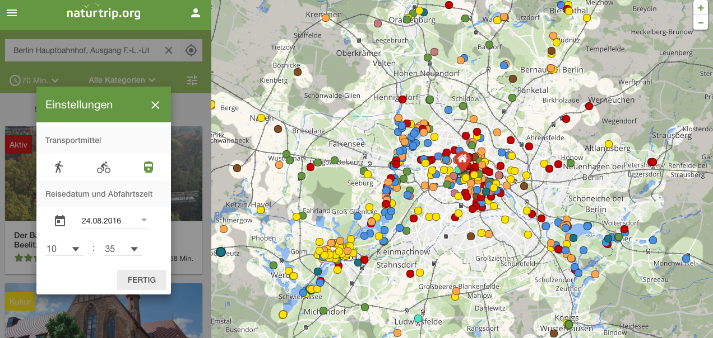
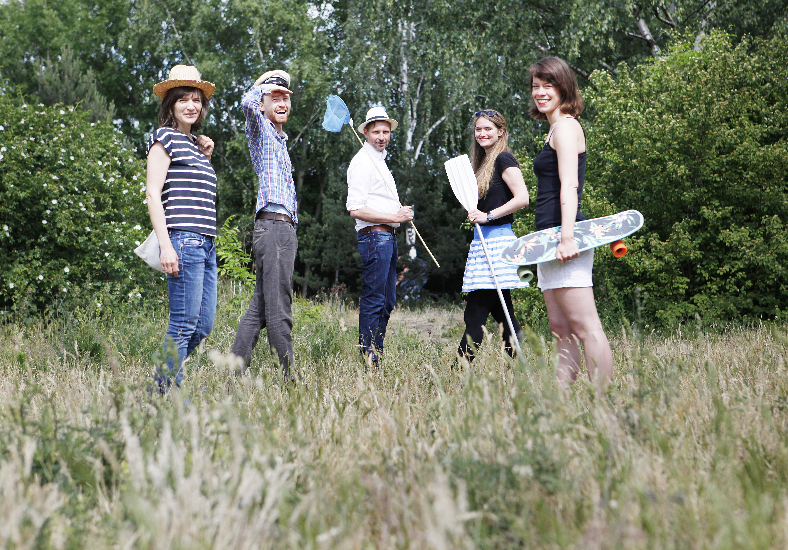

Neue Ausflugsziele entdecken
Mit öffentlichen Verkehrsmitteln und Open-Data
naturtrip.org
In Deutschland werden 80% der Freizeit-Wege mit dem Auto zurückgelegt, obwohl die Deutschen als sehr umweltbewusst gelten und der Zusammenhang von Klimawandel und CO2-Ausstoß allgemein bekannt ist. Im Urlaub und in der Freizeit sind vielen die Planungsunsicherheit von öffentlichen Verkehrsmitteln zu groß und die Erreichbarkeiten unklar. Man weiß, dass es tolle Seen zum Paddeln gibt. Aber wo muss ich genau aussteigen? Und wie weit ist es dann noch zu laufen? In den meisten Fällen werden Ausflüge daher nach wie vor mit dem Auto unternommen, statt auf klimaneutrale öffentliche Verkehrsmittel zu setzen.
Mithilfe von Fahrplanrohdaten der Verkehrsbetriebe und einer Big-Data-Software ermöglicht naturtrip.org die Freizeitgestaltung mit Bus und Bahn genauso bequem und planungssicher wie mit dem Auto. naturtrip.org zeigt nur die Ausflugtipps an, zu denen man bequem mit den öffentlichen Verkehrsmitteln und dem Rad gut hinkommt. Viele Ziele sind mit öffentlichen Verkehrsmitteln sogar einfacher und schneller zu erreichen und genau diese findet naturtrip.org für seine Nutzer individuell angepasst an ihre Bedürfnisse. Dabei lädt die Seite Nutzer ein, neue Orte über präferierte Aktivitäten zu entdecken: paddeln, gut essen oder in eine Therme gehen – oft weiß man zwar nicht wohin, aber was man machen möchte. Genau hier setzt naturtrip.org an und schlägt Unternehmungslustigen solche Freizeit-Tipps vor, die vom individuellen Startpunkt und der Reisezeit mit Bahn, Bus oder Rad gut zu erreichen sind. Da bisher nur die Rohdaten der Verkehrsbetriebe Berlins und Brandenburgs zur Verfügung stehen, beschränkt sich die Suche aktuell auf dieses Gebiet. An einem Ausbau wird gearbeitet, doch der hängt von der Verfügbarkeit der Fahrplandaten weiterer regionaler Verkehrsverbünde ab. Nutzbar ist naturtrip.org als Website sowie auf dem Smartphone und Tablet.

Naturtrip.org verwendet die Fahrplandaten des Verkehrsverbunds Berlin-Brandenburg. Die Daten liegen im GTFS-Format vor und sind als Open Data freigegeben. Das Kartenmaterial von naturtrip.org basiert auf Open Street Map.
Naturtrip.org nutzt eine intelligente Routing-Software von Motion Intelligence. Damit werden Big-Data-Abfragen in binnen Sekunden gemacht und in einer Umkreissuche alle Orte identifizert, die zum gewünschten Zeitpunkt gut zu erreichen sind. Sobald man ein Ausflugsziel ausgewählt hat, bekommt der Nutzer die konkrete Fahrplanauskunft inklusive Umsteigen.

Jeder, der neue Ziele im Grünen mit den öffentlichen Verkehrsmitteln in Berlin und Brandenburg entdecken möchte.
Gute Ausflugstipps werden von Nutzern an andere Nutzer weitergegeben und können auch von touristischen Betrieben und
Freizeitzielen selbst online gestellt werden.
So profitieren Unternehmenslustige, Betreiber von Ausflugszielen und
nicht zuletzt das Klima. Aber auch die Verkehrsbetriebe gewinnen, und zwar in doppelter Hinsicht: Sie gewinnen
Kunden und positionieren sich als umweltschützendes Verkehrsmittel. Außerdem profitieren die Tourismusregionen,
weil naturtrip.org städtische Zielgruppen ohne Auto auf’s Land bringt.
Offizielle Seite:
http://www.naturtrip.org